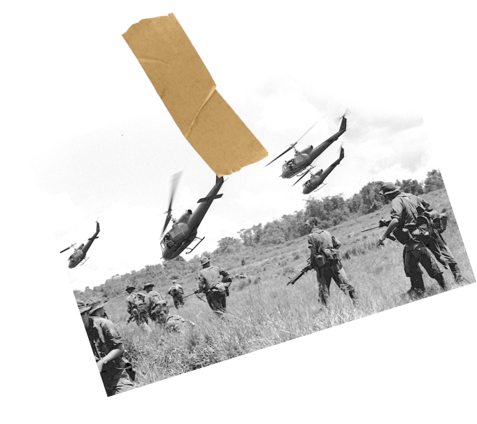
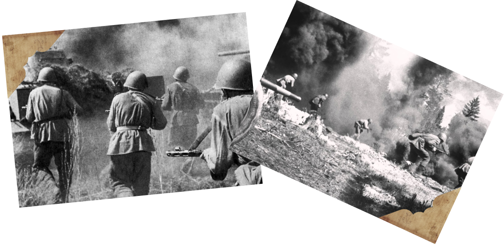
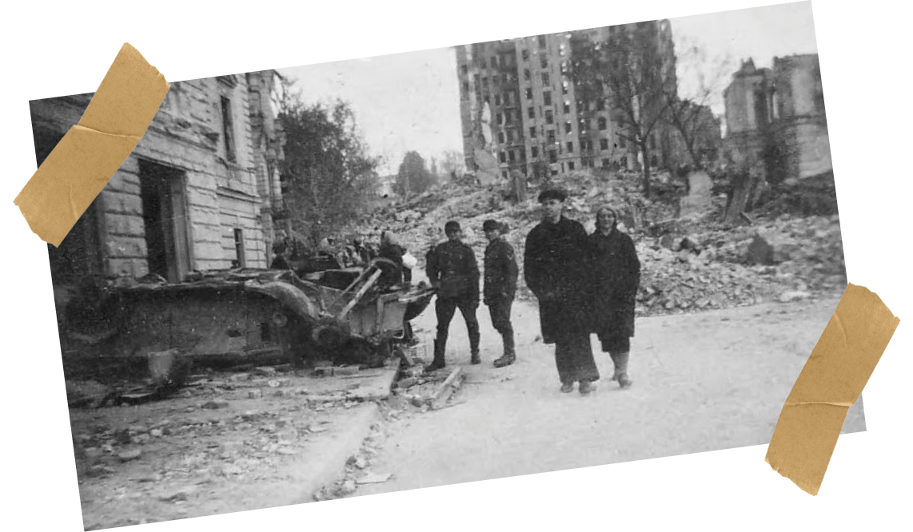
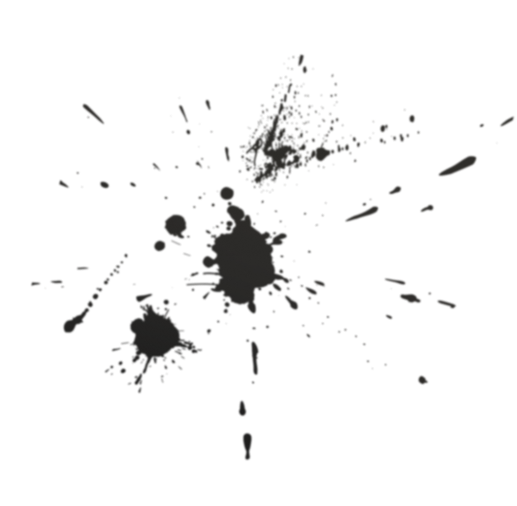

Оставили Чернигов. Говорят, что Ленинград окружен. Болгария превращена в немецкий плацдарм против нас. Молотов послал ноту протеста. Вчера на собрании жилком говорил, что надо готовиться к химической войне. Собирают теплые вещи для армии. Вот этого никто не ожидал.
14 сентября 1941 года.
Дрожат окна от оружейной стрельбы. Вон как видно близко. Сейчас уже сплошной гул от выстрелов. Видимо, начались бои за Киев.

16 сентября 1941 года.
Ночь прошла неспокойно. Все время просыпалась от воя пролетающих снарядов. В шесть часов был такой страшный грохот от упавшего снаряда, что зазвенели стекла.
Снаряды падают по улицам. Есть убитые и раненые. На Красноармейской вылетели все стекла.

18 сентября 1941 года.
Страшное творится в Киеве, беспрестанные взрывы, грохот, стрельба, небо заволакивают клубы дыма. Взорвали ТЭЦ, депо и другие сооружения. Дым со всех сторон. С утра нет воды, радио не работает с шести утра. Была в городе. Бесконечное количество военных подвод, машин, идут войска. Как-то грозно стало и холодно. Много раненых, много плачущих женщин. Видимо, идет отступление.

